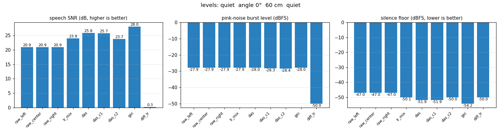
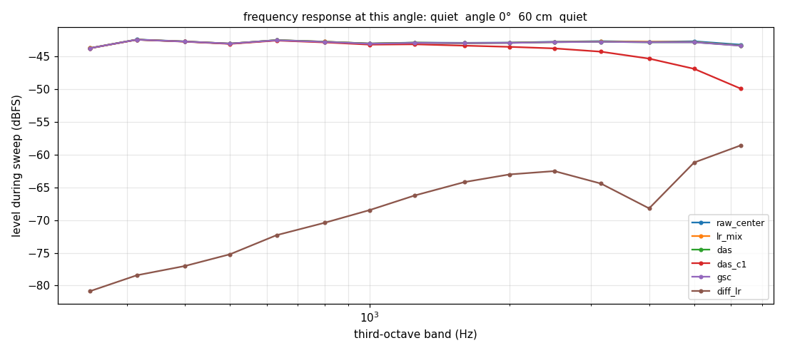
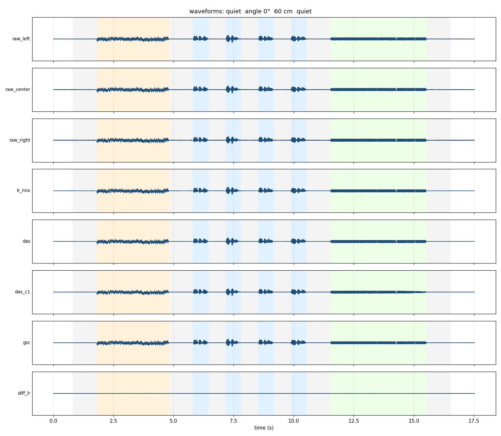
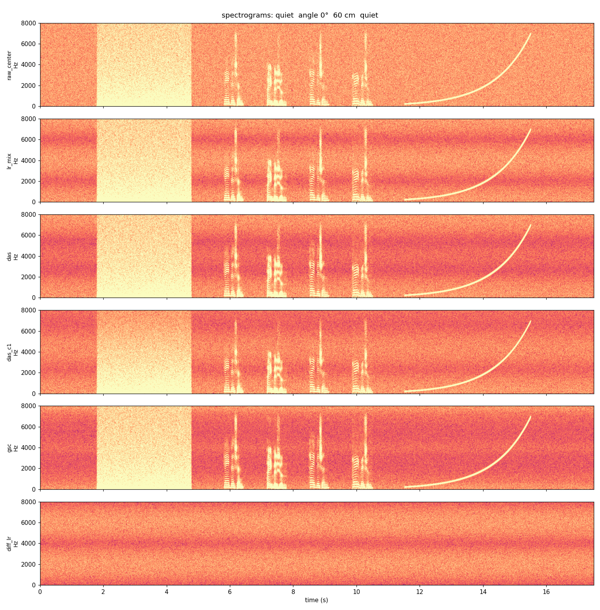

angle 0°, 60 cm, quiet, 17.53 s. Clip offset 0.8 s (confidence 0.945).
Microphones hear the source at +0° (L-R delay 0.0 samples, peak 11.1).
| path | rms_dbfs | speech_snr_db | noise_level_dbfs | silence_floor_dbfs | peak | clips |
|---|---|---|---|---|---|---|
| raw_left | -30.47 | 20.91 | -27.91 | -47.01 | 6211 | 0 |
| raw_center | -30.47 | 20.9 | -27.91 | -47.01 | 6506 | 0 |
| raw_right | -30.46 | 20.92 | -27.91 | -47.03 | 6328 | 0 |
| lr_mix | -30.52 | 23.93 | -27.94 | -50.07 | 6269 | 0 |
| das | -30.54 | 25.76 | -27.96 | -51.92 | 6346 | 0 |
| das_c1 | -30.98 | 25.7 | -28.27 | -51.91 | 5955 | 0 |
| das_c2 | -31.33 | 23.7 | -28.42 | -50.03 | 5748 | 0 |
| diff_lr | -50.02 | 0.28 | -50.0 | -50.04 | 501 | 0 |
| gsc | -30.55 | 28.04 | -27.97 | -54.23 | 6329 | 0 |



